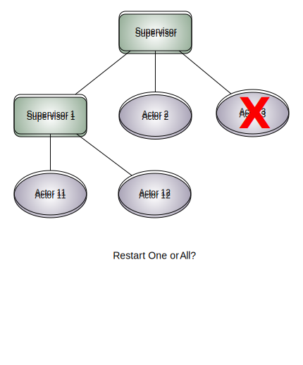
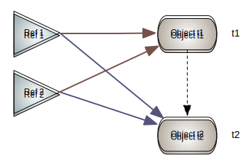
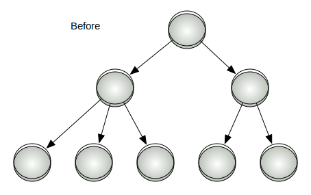
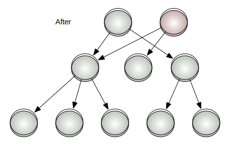

The Akka Framework
Simpler Scalability, Fault-Tolerance,
Concurrency and Remoting through Actors
Dean Wampler
dean@deanwampler.com, @deanwampler
What Is Akka?
- http://akkasource.org
- Source at http://github.com/jboner/akka
- Documentation at http://doc.akkasource.org
- A Scala and Java framework for scalability, fault-tolerance, concurrency and remoting through actors.
- Inspired by Erlang OTP.
- Started and led by Jonas Bonér.
- Co-creator of AspectWerkz.
- Worked on JRocket, Terracotta, and AspectJ.
Highlights
| Highlight | Description |
|---|---|
| Simpler Concurrency | Write robust concurrent applications using Actors, STM & Transactors (transactional actors). |
| Event-driven Architecture | The perfect platform for asynchronous, event-driven architectures. Never block. |
| True Scalability | Scale out on multi-core or multiple nodes using asynchronous message passing. |
(Adapted from the http://akkasource.org web site.)
Highlights
| Highlight | Description |
|---|---|
| Fault Tolerance | Embrace failure. Write applications that self-heal using Erlang-style Actor supervisor hierarchies. |
| Transparent Remoting | Remote Actors give you a high-performance, transparent-distributed programming model. |
| Scala and Java APIs | Use Scala if you can, but if you can't, get the benefits in your existing Java apps! |
Actors
| Feature | Description |
|---|---|
| Actors | Core concurrency abstraction. |
| Transactors | Actors with transactional behavior. |
| Remote Actors | Horizontally distributed behavior. |
But Wait, There's More!
| Feature | Description |
|---|---|
| STM | Software Transactional Memory: the hotness made popular by Clojure. (Multiverse library) |
| Durable STM | Redis, MongoDB, Cassandra, and more added regularly. |
| Microkernel | A standalone kernel for running Akka-based applications, or deploy your app in an application server. |
| Security | Adapted from Lift’s authentication module. |
But Wait, There's More!
| Feature | Description |
|---|---|
| REST | Module for REST-ful web services. |
| Comet | Module for Comet “persistent” connections. |
| AMQP | Module for AMQP messaging. |
But Wait, There's More!
| Feature | Description |
|---|---|
| Spring, Guice, and Lift | Integration modules for these frameworks. |
| Camel | Module for the Apache Camel library, a DSL for routing definitions, Spring configuration definitions, etc. |
| Samples | For Security, REST, Chat, and Lift. |
Actors
"Autonomous agents" coordinate work through message passing.
- Actors can work in parallel.
- Provides an intuitive model for concurrency
Originally developed by Hewitt in 1973. Made famous by Erlang. (Scala actor syntax is patterned after Erlang's)
Akka's Actor Library
Akka's actor library is independent of Scala’s standard actor API.
- Simpler syntax.
- Adds actor supervision, transactional behavior.
- Significant performance improvements.
- Can be "untyped" or "typed".
Actor Supervision

If an Actor Dies?
Actor Life Cycle
| Life Cycle | Description |
|---|---|
Temporary | Do not restart the actor if it crashes. |
Permanent | Restart the actor when necessary; keep it running permanently. |
Restart Strategy an Actor Dies?
| Strategy | Description |
|---|---|
| One for All | Just restart the failed actor. |
| All for One | Restart all the actors. |
Erlang OTP-Style Supervisors
val supervisor = Supervisor( SupervisorConfig( RestartStrategy( AllForOne, 3, 1000, List(classOf[Exception])), Supervise( actorOf[Actor2], Permanent) :: Supervise( actorOf[Actor3], Permanent) :: Nil))
Other Arguments for Controlling Restart
| Description |
|---|
| The number of retries to attempt. |
| How long to wait between restart attempts. |
| What exceptions to intercept. |
Supervision and Fault Handling
Akka subscribes to the Let It Fail strategy:
- Don’t build complicated logic to attempt recovery when things go wrong.
- Distribute behavior among many actors.
- When one of them gets into trouble, kill it and restart it.
It's easier to just drop a small piece of malfunctioning code. A big "wad" is too big to fail...
Actors vs. ActorRefs
Like Clojure refs, Akka separates the actor from references to it.
- You send messages to the
ActorRef. - If the
Actorhas to be restarted, the references are still valid.
An Actor with an Init. Body and Message Handler
This example uses the Actor object’s init method to create an actor. (Eliding se.scalablesolutions prefixes...)
import ...akka.actor.Actor._
val a = Actor.init {
... // initializer block (optional)
} receive {
case message => ... // handle message
}
// "a" is of type ActorRef!
Create and Wrap a Custom Actor Type
This example uses a custom Actor and the actorOf "static" method to create an instance and wrap it in a ActorRef.
import ...akka.actor.Actor._ val actor2Ref = actorOf[Actor2] actor2Ref.startor
val actor2Ref = actorOf[Actor2].start
Spawn a Worker Task
When you don’t need to send it messages…
import ...akka.actor.Actor._
spawn {
... // do stuff
}
Send an Asynchronous Message
// Import Self when the current // sender isn't an actor. import Actor.Sender.Self actor ! "Hello" // Fire and forget // Go about your business...
Send a Synchronous Message
// fire and wait for a reply...
(actor !! "Hello") match {
case Some(reply) => ... // handle reply
case None => ... // handle timeout
}
Send Messages with Future Replies
def pingAllActors(message: String) = {
val allActors = ActorRegistry.actors
try {
val futures = allActors map {
actor => actor !!! Ping(message)
}
Futures.awaitAll(futures)
handlePingRepliesIn(futures)
} catch {
case fte: FutureTimeoutException => ...
}
}
Forward a Message
Retains the original sender.
actor.forward(message)
“HotSwap” - Replace an Actor’s Message Loop
Send a message HotSwap with the new PartialFunction defining the new message loop for the Actor.
actor ! HotSwap(Some({
case message => println("Hotswapped body...")
}))
“HotSwap” - Rollback to Previous Version
The old version is kept so you can rollback by sending HotSwap with None.
actor ! HotSwap(None)
The original actor theory included this idea!
STM
Software Transactional Memory (STM) is the application of ACID (minus the D) transactional semantics to memory. It has been popularized by Clojure, of course.
STM: Based on 2 Concepts
- Managed References
- Persistent Data Structures
Managed References
Memory cells hold an immutable value. CAS (Compare-And-Swap) semantics are enforced by the STM to coordinate changes across many References.
Persistent Data Structures
Persistent Data Structures
Persistent Data Structures
- Immutable, but with fast access and modification times, due to structural sharing.
- Persistent, because no modification affects the original structure.
Akka's Persistent Collections
Remember that persistent doesn't mean written to a database. It means that older versions are not lost when newer instances are created (until garbage collected).
| Data Structure | Description |
|---|---|
PersistentMap | Implements scala.collection.mutable.Map |
PersistentVector | Implements scala.RandomAccessSeq |
PersistentRef | Compare and Set (CAS) cell |
Akka's STM: Implementation
Akka’s persistent Map and Vector are ports of Clojure’s Map and Vector.
The Managed References are implemented using the Java Multiverse STM.
(Scala's standard library will have its own STM API eventually.)
Akka's STM: Durability?
Akka provides backend durability, if desired, using MongoDB, Cassandra, Redis, and more.
(These Akka APIs are not intended for general persistence needs.)
Transactors: Transactions + Actors
Transactors combine Actors, which provide concurrency and asynchronous event-based programming, and STM, which provides compositional, transactional, state management. Hence, transactors provide transactional, compositional, asynchronous, event-based message flows.
There are several ways to impose “transaction required” semantics:
Extend the Transactor Trait
import ...akka.actor.Transactor
class MyActor extends Transactor {
...
}
Mix in the TransactionRequired Trait
class MyActor extends Actor
with TransactionRequired {
...
}
makeTransactionRequired Method
class MyActor extends Actor {
makeTransactionRequired
...
}
Persistent Data Structs in a Transactor
Tip: If you create a transactional Ref, Vector or Map in a Transactor constructor, either declare it lazy, to ensure that it is created within the scope of a transaction, or create the data structure inside an atomic { ... } block.
Other Core Actor Modules
I'll just to mention these.
| Module | Description |
|---|---|
| Remote Actors | Mostly-transparent remote message passing. |
| Dispatcher | Configure and optimize the messaging infrastructure, etc. |
Other Core General Modules
I'll just to mention these, too.
| Module | Description |
|---|---|
| Serialization | JSON, Protocol Buffers, and SBinary. |
| Configuration | Conventional text-based configuration files. |
| Cluster Membership | JGroups (P2P), Shoal (also P2P + JXTA), ZooKeeper (planned). |
Microkernel Module
- To start the kernel invoke:
java -jar $AKKA_HOME/dist/akka-<version>.jar
- Wait for all services to start up.
- Profit!
(Doesn't support a full web stack. Use Jetty...)
Configuration
The kernel will look for a configuration file akka.conf, e.g., in $AKKA_HOME/config/akka.conf or on the CLASSPATH.
Some of the things you can configure:
- Logging.
- Actor and STM default properties.
- Persistence store properties.
- Server and client hostnames and ports.
- …
Persistence Module
Instances of persistent data structures can be backed by one of several (and growing) supported NoSQL datastores:
- Cassandra
- Redis
- MongoDB
- CouchDB
- ...
Cassandra Example (1/5)
Requires an Akka configuration file, e.g., akka.conf, for details like the host and port, and a Cassandra configuration file storage-conf.xml.
Create one of the persistent data structures:
val map = CassandraStorage.newMap(id) val vector = CassandraStorage.newVector(id) val ref = CassandraStorage.newRef(id)
Cassandra Example (2/5)
Retrieve a persistent data structure based on an explicit id (will be created if it doesn’t exist):
val map = CassandraStorage.getMap(id) val vector = CassandraStorage.getVector(id) val ref = CassandraStorage.getRef(id)
Cassandra Example (3/5)
Akka also provides a direct Cassandra API. It abstracts away session pooling, protocol etc. and lets us by-pass the STM persistence abstractions (Map, Vector and Ref).
import ...akka.state.CassandraSessionPool
val sessions = new CassandraSessionPool(
keyspace,
StackPool(SocketProvider(hostname, port)),
protocol,
ConsistencyLevel.QUORUM)
...
Cassandra Example (4/5)
...
// insert a column
sessions.withSession { session =>
session ++| (key, new ColumnPath(columnFamily, null, columnName),
serializer.out(element), System.currentTimeMillis)
}
...
Cassandra Example (5/5)
...
// retrieve a column
val column: Option[ColumnOrSuperColumn] = sessions.withSession { session =>
session | (key, new ColumnPath(columnFamily, null, columnName))
}
// get a range of colums
val columns: List[ColumnOrSuperColumn] = sessions.withSession { session =>
session / (key, columnParent, slicePredicate, isAscending, count)
}
Persistence Module: MongoDB and Redis
There are similar APIs for the other databases, with various levels of "completeness".
Recap (1/2)
- Simpler Concurrency: Write simpler concurrent (yet correct) applications using Actors, STM & Transactors (transactional actors).
- Event-driven Architecture: The perfect platform for asynchronous, event-driven architectures. Never block.
- True Scalability: Scale out on multi-core or multiple nodes using asynchronous message passing.
Recap (2/2)
- Fault-tolerance: Embrace failure. Write applications that self-heal using Erlang-style Actor supervisor hierarchies.
- Transparent Remoting: Remote Actors give you a high-performance, transparent-distributed programming model.
- Scala and Java APIs: Scala and Java APIs, as well as integration with numerous 3rd-party APIs, like Spring. Deploy in your application server or run it stand-alone.